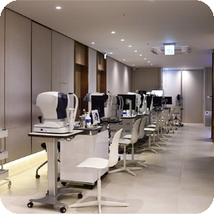

DRY EYE
눈의 불편함,
원인부터 살펴봅니다.
눈물과 눈 표면의 상태를 확인하고 관리 방법을 상담합니다.

UNDERSTANDING
안구건조증 안내
안구건조증은 눈물이 충분하지 않거나 눈물막이 불안정해 눈 표면에 불편함이 생기는 상태입니다. 증상과 눈 표면 상태를 함께 확인합니다.
WHAT TO NOTICE
이런 변화를
살펴보세요
눈이 뻑뻑하거나 이물감이 있습니다.
눈이 따갑거나 화끈거립니다.
시야가 흐려졌다가 좋아집니다.
눈이 충혈되거나 쉽게 피로합니다.
증상만으로 질환을 판단하기는 어렵습니다. 검사와 진료를 통해 원인을 확인하세요.
DIAGNOSIS
검사
- 01
증상과 생활 환경 상담
화면 사용, 렌즈 착용, 복용약 및 환경을 확인합니다.
- 02
눈 표면 검사
눈물과 각막, 눈꺼풀 등 눈 표면의 상태를 살핍니다.
CARE & TREATMENT
관리·치료 방향
- 01
생활과 눈 표면 관리
화면 사용 중 휴식, 환경 조절 및 눈꺼풀 관리 등을 상담합니다.
- 02
상태에 맞는 치료
눈의 상태와 원인에 따라 인공눈물 등 필요한 치료를 선택합니다.
QUESTIONS
자주 묻는 질문
인공눈물만 사용하면 되나요?
원인과 증상에 따라 관리 방법이 달라집니다. 불편이 지속되면 눈 표면 상태를 검사하고 상담하세요.
검사와 치료 방법은 눈 상태에 따라 달라집니다. 진료 후 의료진과 함께 결정합니다.
진료 안내: 홈페이지 리뉴얼 기획안 · 일반 질환 정보 참고: National Eye Institute